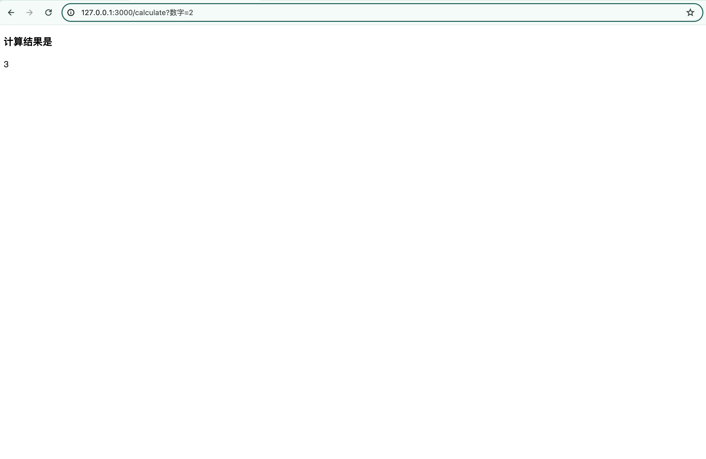

Python-Flask快速上手
在训练好深度学习模型后，可以使用Python的Flask框架快速搭建一个服务，用于模型效果的展示
最近遇到了这个需求，于是在网络上找到了一些资料(主要参考了台大-彭老师的视频)，对Flask的基础内容进行了整理总结成此文
下面正文开始
1. URL的组成与运作方式
组成
通讯协议：//主机名称:端口号/路径?要求字串
比如：
https：//www.google.com/search?q=test
其中的“要求字串”允许省略，上述例子中的“端口号”省略不写，实际上使用的是默认值
- 通讯协议：通过后端以及网络环境决定使用http或https
- 主机名称：购买域名，设定dns记录，应用AWS云端服务决定主机名称
- 端口号：通过后端程序或设定档决定
- 路径：通过后端程序或设定档决定
- 要求字串：通过后端程序决定
运作方式
浏览器前端根据通讯协议，主机名称、端口号连接到网络上的服务器，服务器根据路径，要求字串决定要采取的动作，并回传给前端
2. 路由基础
基本路由
决定后端程序要支援的路径
比如
1 |
|
动态路由
一次支援拥有“相同字首”的路径，即：
一次支援多个路径，并回应不同的讯息给前端
动态路由设定语法：
1 |
|
举例：
1 |
|
这样做的好处在于，当传入的name参数为“user1”时，拿到的信息就是”Hello user1”，可以根据用户名进行灵活替换
3. 静态档案StaticFiles
静态档案：不执行程序，直接将档案发送到前端
常见的静态档案包括：
- 图片档案
- 影片档案
- HTML、CSS、JavaScript程序
直接将档案名称对应到”网址路径”，即可访问这些档案
举个例子，
对于创建的app：
1 | app=Flask(__name__) |
存储静态档案的文件夹固定命名为static（默认），所以必须将静态档案放在static文件夹下（也可以自定义，继续往下看）
假设在static文件夹下放一张图片，叫做head.png，使用以下网址路径即可访问该图片：
1 | http://127.0.0.1:3000/static/head.png |
如果你想自定义访问静态档案时的网址路径，则需要在创建app时添加新的参数，如下：
1 | Flask( |
那么在访问static文件夹下的head.png时，网址如下：
1 | http://127.0.0.1:3000/files/head.png |
进一步地，如果你还想自定义存放静态档案的文件夹，比如将其存放在public文件夹下，那么可以这样：
1 | Flask( |
此时就可以访问public文件夹下的head.png了，网址依然是：
1 | http://127.0.0.1:3000/files/head.png |
因为上述操作仅仅自定义了存放静态档案的文件夹，而访问所需网址路径并没有修改
4.HTTP request
request非常重要，在使用Flask部署模型服务时，模型运行所需参数，比如图像路径，batch size等信息，或者上传推理图像等操作，都需要通过request的方法取得
通过from flask import request引入requst
request有许多属性，可以一一查看，比如：
1 | # 建立网站首页 |
直接运行app.py，终端将打印出如下信息：
1 | 请求方法： GET |
更多关于request的使用方式请继续往下看
5. 要求字串Query String处理
可以通过http请求取得传入的要求字串中携带的参数：request.args.get('参数'，默认值)
直接举个例子，计算1到max_number的和：
1 | # 建立路径getSum对应的处理函数 |
当计算1到10的和时，在浏览器中输入的完整网址为：
1 | http://127.0.0.1:3000/getSum?max_number=10 |
按下回车，浏览器上显示结果：
1 | 0+...+10=55 |
传入参数的个数是无限制的，因此可以设置要求字串携带多个参数，比如，要计算min_number到max_number的和，就需要同时传入这两个参数：
1 | # 建立路径getMinMaxSum对应的处理函数 |
此时，在浏览器中输入的完整网址为：
1 | http://127.0.0.1:3000/getMinMaxSum?min_number=2&max_number=10 |
结果：
1 | 2+...+10=54 |
6. Response和Redirect
response
通常，将return结果以json格式进行返回，比如
1 | return json.dumps({'status':"ok",'text':"您好"},ensure_ascii=False) |
其中，ensure_ascii=False是为了确保中文能够正常显示
redirect
当访问某个网址路径时，可以设置让其跳转到其他网址路径下
比如，当检测到用户使用的中文时，跳转到对应的中文首页
1 | # 建立网站首页 |
其中，/zh/对应的处理函数如下：
1 | # 建立路径/zh/对应的处理函数 |
7. 样板引擎
样板引擎的作用是：根据样板档案，产生字串，传送到前端
使用样板引擎的优点：
- 方便撰写复杂的前端程序
- 方便在回应中，动态的带入资料
样板档案必须建立在templates文件夹下
通过render_template()根据样板档案的内容产生文字串，比如
1 |
|
比如：
在templates文件夹下新建一个叫做index的文本文件，内容为：
1 | <h3>您好，欢迎光临</h3> |
后端主页访问程序为：
1 |
|
那么，浏览器返回的结果将是渲染后的HTML形式：
1 | ## 您好，欢迎光临 |
另外，在使用样板引擎时，可以使用\{\{\}\}定义栏位，比如网站首页的html内容可以这样写：
1 | <h3>您好，{{name}},欢迎光临</h3> |
相应的后端程序处理函数为：
1 |
|
浏览器访问主页，显示如下：
1 | ## 您好，小明,欢迎光临 |
8. 网页跳转和超链接
网页跳转
在前端设计网页时，可以添加跳转到其他页面的链接，比如index.html中的内容如下：
1 |
|
在启动后端服务后，在浏览器前端点击连接到网页文字，将会跳转到page路由对应的处理函数
后端设计如下：
1 | # 建立路径/对应的处理函数 |
这里，将会跳转到渲染后的page.html，网页源代码示例如下：
1 |
|
另外，由于以上的两个网页界面都属于http://127.0.0.1:3000/，因此网页跳转链接中可以只写路由名字，比如像下面这样的index.html：
1 |
|
但是，如果需要跳转到外部链接，那么一定要写完整的主机名称，不可省略
超链接到图片
为了在前端显示图片，需要使用html的<img src="图片链接"/>
和上面的网页跳转链接类似，这里的图片链接如果时外链，那么需要写全，而如果是存储在服务器上的图，那么可以省略主机名称（和端口号）不写
举个例子，假设存放静态文件的文件夹叫做public，里面有一张head.png，可以通过以下两种方式设置图片的超链接：
1 |
|
同理，可将<img src="http://127.0.0.1:3000/head.png" />替换成<img src="/head.png" />
9. 表单Form
通过浏览器前端界面中的表单，用户可以将表单中相应变量的值写入，并提交到后端，flask后端通过request.args.get就可以拿到用户的输入
表单使用form进行创建
直接举例，假设网站主页index.html内容如下：
1 |
|
其中的<form> </form>内部定义了表单的具体内容，这里包括一个叫做可自定义的变量名的输入框（可以理解为程序中定义了一个变量叫做可自定义的变量名，用户输入的内容可以看作该变量的值），它的类型type是”text”，表明可以输入文本；接着又定义了一个按钮button，用于将用户填写好的表单一键发送到后端
现在，用一个更具体的场景进行演示表单是如何在前后端进行交互的
假设用户需要填写姓名和年龄这两个字段，并给到后端进行处理，相应的前端index.html如下：
1 |
|
由于form的action指向/show，也就是说，用户提交的表单将会发送到后端的/show方法，因此需要在后端定义一下对应的处理函数：
1 | # 建立路径/show对应的处理函数 |
现在前后端代码都准备完毕，运行程序，假设用户在浏览器前端的表单中输入（··之间是用户输入的，其余是表单显示的内容）：
1 | 姓名 ·小明· 年龄 ·12· 送出表单(这是一个按钮) |
点击送出表单按钮，浏览器网址显示为
1 | http://127.0.0.1:3000/show?姓名=小明&年龄=12 |
后端的/show方法中通过request.args.get来获取前端发送过来的两个变量对应的值，将return的内容显示到前端：
1 | 12岁的小明，欢迎光临 |
在拥有了表单后，就可以做一些其他复杂的前后端操作了，比如，前端通过表单传入一个数字num，后端拿到这个数字并计算1+2+…+num_，具体代码如下
首先，在templates文件夹下的index.html中添加一个表单：
1 |
|
接着，在后端编写相应的calculate函数：
1 | # 建立路径/show对应的处理函数 |
最后，在templates文件夹下新建一个result.html，用于接收后端发到前端的计算结果，注意这里使用了样板引擎的{{}}语法来接收后端发送过来的计算结果：
1 |
|
主页如下，在表单中输入数字2
点击计算结果：

10. GET与POST
GET是默认采用的连接方法，因此之前演示的例子均使用了GET方法
直观对比GET与POST：
在GET方法时，要求字串会显示在访问的url中，而POST方法不会，所以POST更安全，尤其是在输入账号密码等信息时。
继续上一部分的例子，将主页处理函数index的连接方法设置为POST：
1 | # 建立路径/对应的处理函数 |
其他地方不做改动，在浏览器访问，返回结果为：
1 | Method Not Allowed |
这是因为前端的表单form默认采用的是GET，而后端的连接方法此时变成了POST
ok，接下来仍以calculate为例进行更详细的展示
将后端页面中的连接方法改成POST，前端保持默认的GET：
1 | # 建立路径/calculate对应的处理函数 |
1 | <!-- 计算器 --> |
访问calculate对应的url，即http://127.0.0.1:3000/calculate?数字=2，报错：
1 | Not Found |
而如果将后端的连接方法保持为默认的GET，但是将前端的连接方法改成POST，则报如下的错误：
1 | Method Not Allowed |
解决方法也很简单，就是将前端页面的form表单中的连接方法也改成和后端一致的，就可以正常访问了
当然，如果都是用GET，那么直接默认不写就可以
但如果全部改成POST，需要注意后端程序中获取前端传入参数时，需要将request.atgs.get替换成request.form:
(这里是用中文作为表单的name值会报错，所以将之前的数字改成了英文的number)
前端：
1 | <form action="/calculate" method="POST"> |
后端：
1 | # 建立路径/calculate对应的处理函数 |
11. 使用者状态管理Session
一般情况下，前端与后端之间的连接是一次性的，也就是说，当前连接的状态在连接被关闭后就销毁了
但有时候，我们希望记住用户的一些信息，比如用户的姓名，昵称等，此时使用session就可以实现这一功能
在flask中，session可以使用类似python字典的方法存取其中的key-value
直接举个例子：
1 | from flask import Flask |
（注意，在使用session时，一定要设置app.secret_key）
当第一次访问hello路径时，需要传入用户名：
1 | http://127.0.0.1:3000/hello?name=小明 |
而如果继续talk时，虽然前后端之间建立了一个新的连接，但是session中已经记录了用户的名字，所以当访问talk对应的网址路径时，可以直接取出来session中的username
1 | http://127.0.0.1:3000/talk |
浏览器前端打印：
1 | 欢迎回来，小明 |
以上就是关于Flask的基础内容介绍。